Chapter 5
Laws of Motion
Laws of Motion

5.1 Introduction
5.2 Aristotle’s fallacy
5.3 The law of inertia
5.4 Newton’s first law of motion
5.5 Newton’s second law of motion
5.6 Newton’s third law of motion
5.7 Conservation of momentum
5.8 Equilibrium of a particle
5.9 Common forces in mechanics
5.10 Circular motion
5.11 Solving problems in mechanics
Summary
Points to ponder
Exercises
Additional exercises
5.1 Introduction
In the preceding Chapter, our concern was to describe the motion of a particle in space quantitatively. We saw that uniform motion needs the concept of velocity alone whereas non-uniform motion requires the concept of acceleration in addition. So far, we have not asked the question as to what governs the motion of bodies. In this chapter, we turn to this basic question.
Let us first guess the answer based on our common experience. To move a football at rest, someone must kick it. To throw a stone upwards, one has to give it an upward push. A breeze causes the branches of a tree to swing; a strong wind can even move heavy objects. A boat moves in a flowing river without anyone rowing it. Clearly, some external agency is needed to provide force to move a body from rest. Likewise, an external force is needed also to retard or stop motion. You can stop a ball rolling down an inclined plane by applying a force against the direction of its motion.
In these examples, the external agency of force (hands, wind, stream, etc) is in contact with the object. This is not always necessary. A stone released from the top of a building accelerates downward due to the gravitational pull of the earth. A bar magnet can attract an iron nail from a distance. This shows that external agencies (e.g. gravitational and magnetic forces ) can exert force on a body even from a distance.
In short, a force is required to put a stationary body in motion or stop a moving body, and some external agency is needed to provide this force. The external agency may or may not be in contact with the body.
So far so good. But what if a body is moving uniformly (e.g. a skater moving straight with constant speed on a horizontal ice slab) ? Is an external force required to keep a body in uniform motion?
5.2 Aristotle’s fallacy
The question posed above appears to be simple. However, it took ages to answer it. Indeed, the correct answer to this question given by Galileo in the seventeenth century was the foundation of Newtonian mechanics, which signalled the birth of modern science.
The Greek thinker, Aristotle (384 B.C– 322 B.C.), held the view that if a body is moving, something external is required to keep it moving. According to this view, for example, an arrow shot from a bow keeps flying since the air behind the arrow keeps pushing it. The view was part of an elaborate framework of ideas developed by Aristotle on the motion of bodies in the universe. Most of the Aristotelian ideas on motion are now known to be wrong and need not concern us. For our purpose here, the Aristotelian law of motion may be phrased thus: An external force is required to keep a body in motion.
Aristotelian law of motion is flawed, as we shall see. However, it is a natural view that anyone would hold from common experience. Even a small child playing with a simple (non-electric) toy-car on a floor knows intuitively that it needs to constantly drag the string attached to the toy-car with some force to keep it going. If it releases the string, it comes to rest. This experience is common to most terrestrial motion. External forces seem to be needed to keep bodies in motion. Left to themselves, all bodies eventually come to rest.
What is the flaw in Aristotle’s argument? The answer is: a moving toy car comes to rest because the external force of friction on the car by the floor opposes its motion. To counter this force, the child has to apply an external force on the car in the direction of motion. When the car is in uniform motion, there is no net external force acting on it: the force by the child cancels the force ( friction) by the floor. The corollary is: if there were no friction, the child would not be required to apply any force to keep the toy car in uniform motion.
The opposing forces such as friction (solids) and viscous forces (for fluids) are always present in the natural world. This explains why forces by external agencies are necessary to overcome the frictional forces to keep bodies in uniform motion. Now we understand where Aristotle went wrong. He coded this practical experience in the form of a basic argument. To get at the true law of nature for forces and motion, one has to imagine a world in which uniform motion is possible with no frictional forces opposing. This is what Galileo did.
5.3 The law of inertia
Galileo studied motion of objects on an inclined plane. Objects (i) moving down an inclined plane accelerate, while those (ii) moving up retard. (iii) Motion on a horizontal plane is an intermediate situation. Galileo concluded that an object moving on a frictionless horizontal plane must neither have acceleration nor retardation, i.e. it should move with constant velocity (Fig. 5.1(a)).
(i) (ii) (iii)
Fig. 5.1(a)
Another experiment by Galileo leading to the same conclusion involves a double inclined plane. A ball released from rest on one of the planes rolls down and climbs up the other. If the planes are smooth, the final height of the ball is nearly the same as the initial height (a little less but never greater). In the ideal situation, when friction is absent, the final height of the ball is the same as its initial height.
If the slope of the second plane is decreased and the experiment repeated, the ball will still reach the same height, but in doing so, it will travel a longer distance. In the limiting case, when the slope of the second plane is zero (i.e. is a horizontal) the ball travels an infinite distance. In other words, its motion never ceases. This is, of course, an idealised situation (Fig. 5.1(b)).
Fig. 5.1(b) The law of inertia was inferred by Galileo from observations of motion of a ball on a double inclined plane.
In practice, the ball does come to a stop after moving a finite distance on the horizontal plane, because of the opposing force of friction which can never be totally eliminated. However, if there were no friction, the ball would continue to move with a constant velocity on the horizontal plane.
Ideas on Motion in Ancient Indian Science
Ancient Indian thinkers had arrived at an elaborate system of ideas on motion. Force, the cause of motion, was thought to be of different kinds : force due to continuous pressure (nodan), as the force of wind on a sailing vessel; impact (abhighat), as when a potter’s rod strikes the wheel; persistent tendency (sanskara) to move in a straight line(vega) or restoration of shape in an elastic body; transmitted force by a string, rod, etc. The notion of (vega) in the Vaisesika theory of motion perhaps comes closest to the concept of inertia. Vega, the tendency to move in a straight line, was thought to be opposed by contact with objects including atmosphere, a parallel to the ideas of friction and air resistance. It was correctly summarised that the different kinds of motion (translational, rotational and vibrational) of an extended body arise from only the translational motion of its constituent particles. A falling leaf in the wind may have downward motion as a whole (patan) and also rotational and vibrational motion (bhraman, spandan), but each particle of the leaf at an instant only has a definite (small) displacement. There was considerable focus in Indian thought on measurement of motion and units of length and time. It was known that the position of a particle in space can be indicated by distance measured along three axes. Bhaskara (1150 A.D.) had introduced the concept of ‘instantaneous motion’ (tatkaliki gati), which anticipated the modern notion of instantaneous velocity using Differential Calculus. The difference between a wave and a current (of water) was clearly understood; a current is a motion of particles of water under gravity and fluidity while a wave results from the transmission of vibrations of water particles.
Galileo thus, arrived at a new insight on motion that had eluded Aristotle and those who followed him. The state of rest and the state of uniform linear motion (motion with constant velocity) are equivalent. In both cases, there is no net force acting on the body. It is incorrect to assume that a net force is needed to keep a body in uniform motion. To maintain a body in uniform motion, we need to apply an external force to ecounter the frictional force, so that the two forces sum up to zero net external force.
To summarise, if the net external force is zero, a body at rest continues to remain at rest and a body in motion continues to move with a uniform velocity. This property of the body is called inertia. Inertia means ‘resistance to change’. A body does not change its state of rest or uniform motion, unless an external force compels it to change that state.
5.4 Newton’s First Law of motion
Galileo’s simple, but revolutionary ideas dethroned Aristotelian mechanics. A new mechanics had to be developed. This task was accomplished almost single-handedly by Isaac Newton, one of the greatest scientists of all times.
Newton built on Galileo’s ideas and laid the foundation of mechanics in terms of three laws of motion that go by his name. Galileo’s law of inertia was his starting point which he formulated as the first law of motion:
Every body continues to be in its state of rest or of uniform motion in a straight line unless compelled by some external force to act otherwise.
The state of rest or uniform linear motion both imply zero acceleration. The first law of motion can, therefore, be simply expressed as:
If the net external force on a body is zero, its acceleration is zero. Acceleration can be non zero only if there is a net external force on the body.
Two kinds of situations are encountered in the application of this law in practice. In some examples, we know that the net external force on the object is zero. In that case we can conclude that the acceleration of the object is zero. For example, a spaceship out in interstellar space, far from all other objects and with all its rockets turned off, has no net external force acting on it. Its acceleration, according to the first law, must be zero. If it is in motion, it must continue to move with a uniform velocity.
More often, however, we do not know all the forces to begin with. In that case, if we know that an object is unaccelerated (i.e. it is either at rest or in uniform linear motion), we can infer from the first law that the net external force on the object must be zero. Gravity is everywhere. For terrestrial phenomena, in particular, every object experiences gravitational force due to the earth. Also objects in motion generally experience friction, viscous drag, etc. If then, on earth, an object is at rest or in uniform linear motion, it is not because there are no forces acting on it, but because the various external forces cancel out i.e. add up to zero net external force.
Galileo Galilei (1564 - 1642)
Galileo Galilei, born in Pisa, Italy in 1564 was a key figure in the scientific revolution in Europe about four centuries ago. Galileo proposed the concept of acceleration. From experiments on motion of bodies on inclined planes or falling freely, he contradicted the Aristotelian notion that a force was required to keep a body in motion, and that heavier bodies fall faster than lighter bodies under gravity. He thus arrived at the law of inertia that was the starting point of the subsequent epochal work of Isaac Newton.
Galileo’s discoveries in astronomy were equally revolutionary. In 1609, he designed his own telescope (invented earlier in Holland) and used it to make a number of startling observations : mountains and depressions on the surface of the moon; dark spots on the sun; the moons of Jupiter and the phases of Venus. He concluded that the Milky Way derived its luminosity because of a large number of stars not visible to the naked eye. In his masterpiece of scientific reasoning : Dialogue on the Two Chief World Systems, Galileo advocated the heliocentric theory of the solar system proposed by Copernicus, which eventually got universal acceptance.
With Galileo came a turning point in the very method of scientific inquiry. Science was no longer merely observations of nature and inferences from them. Science meant devising and doing experiments to verify or refute theories. Science meant measurement of quantities and a search for mathematical relations between them. Not undeservedly, many regard Galileo as the father of modern science.
Consider a book at rest on a horizontal surface Fig. (5.2(a)). It is subject to two external forces : the force due to gravity (i.e. its weight W) acting downward and the upward force on the book by the table, the normal force R . R is a self-adjusting force. This is an example of the kind of situation mentioned above. The forces are not quite known fully but the state of motion is known. We observe the book to be at rest. Therefore, we conclude from the first law that the magnitude of R equals that of W. A statement often encountered is : “Since W = R, forces cancel and, therefore, the book is at rest”. This is incorrect reasoning. The correct statement is : “Since the book is observed to be at rest, the net external force on it must be zero, according to the first law. This implies that the normal force R must be equal and opposite to the weight W ”.

Fig. 5.2 (a) a book at rest on the table, and (b) a car moving with uniform velocity. The net force is zero in each case.
Consider the motion of a car starting from rest, picking up speed and then moving on a smooth straight road with uniform speed (Fig. (5.2(b)). When the car is stationary, there is no net force acting on it. During pick-up, it accelerates. This must happen due to a net external force. Note, it has to be an external force. The acceleration of the car cannot be accounted for by any internal force. This might sound surprising, but it is true. The only conceivable external force along the road is the force of friction. It is the frictional force that accelerates the car as a whole. (You will learn about friction in section 5.9). When the car moves with constant velocity, there is no net external force.
The property of inertia contained in the First law is evident in many situations. Suppose we are standing in a stationary bus and the driver starts the bus suddenly. We get thrown backward with a jerk. Why ? Our feet are in touch with the floor. If there were no friction, we would remain where we were, while the floor of the bus would simply slip forward under our feet and the back of the bus would hit us. However, fortunately, there is some friction between the feet and the floor. If the start is not too sudden, i.e. if the acceleration is moderate, the frictional force would be enough to accelerate our feet along with the bus. But our body is not strictly a rigid body. It is deformable, i.e. it allows some relative displacement between different parts. What this means is that while our feet go with the bus, the rest of the body remains where it is due to inertia. Relative to the bus, therefore, we are thrown backward. As soon as that happens, however, the muscular forces on the rest of the body (by the feet) come into play to move the body along with the bus. A similar thing happens when the bus suddenly stops. Our feet stop due to the friction which does not allow relative motion between the feet and the floor of the bus. But the rest of the body continues to move forward due to inertia. We are thrown forward. The restoring muscular forces again come into play and bring the body to rest.
Example 5.1 An astronaut accidentally gets separated out of his small spaceship accelerating in inter stellar space at a constant rate of 100 m s-2. What is the acceleration of the astronaut the instant after he is outside the spaceship ? (Assume that there are no nearby stars to exert gravitational force on him.)
Answer Since there are no nearby stars to exert gravitational force on him and the small spaceship exerts negligible gravitational attraction on him, the net force acting on the astronaut, once he is out of the spaceship, is zero. By the first law of motion the acceleration of the astronaut is zero.
5.5 Newton’s Second Law of motion
The first law refers to the simple case when the net external force on a body is zero. The second law of motion refers to the general situation when there is a net external force acting on the body. It relates the net external force to the acceleration of the body.
Momentum
Momentum of a body is defined to be the product of its mass m and velocity v, and is denoted
by p:
p = m v (5.1)
Momentum is clearly a vector quantity. The following common experiences indicate the importance of this quantity for considering the effect of force on motion.
• Suppose a light-weight vehicle (say a small car) and a heavy weight vehicle (say a loaded truck) are parked on a horizontal road. We all know that a much greater force is needed to push the truck than the car to bring them to the same speed in same time. Similarly, a greater opposing force is needed to stop a heavy body than a light body in the same time, if they are moving with the same speed.
• If two stones, one light and the other heavy, are dropped from the top of a building, a person on the ground will find it easier to catch the light stone than the heavy stone. The mass of a body is thus an important parameter that determines the effect of force on its motion.
• Speed is another important parameter to consider. A bullet fired by a gun can easily pierce human tissue before it stops, resulting in casualty. The same bullet fired with moderate speed will not cause much damage. Thus for a given mass, the greater the speed, the greater is the opposing force needed to stop the body in a certain time. Taken together, the product of mass and velocity, that is momentum, is evidently a relevant variable of motion. The greater the change in the momentum in a given time, the greater is the force that needs to be applied.
• A seasoned cricketer catches a cricket ball coming in with great speed far more easily than a novice, who can hurt his hands in the act. One reason is that the cricketer allows a longer time for his hands to stop the ball. As you may have noticed, he draws in the hands backward in the act of catching the ball (Fig. 5.3). The novice, on the other hand, keeps his hands fixed and tries to catch the ball almost instantly. He needs to provide a much greater force to stop the ball instantly, and this hurts. The conclusion is clear: force not only depends on the change in momentum, but also on how fast the change is brought about. The same change in momentum brought about in a shorter time needs a greater applied force. In short, the greater the rate of change of momentum, the greater is the force.

Fig. 5.3 Force not only depends on the change in momentum but also on how fast the change is brought about. A seasoned cricketer draws in his hands during a catch, allowing greater time for the ball to stop and hence requires a smaller force.
• Observations confirm that the product of mass and velocity (i.e. momentum) is basic to the effect of force on motion. Suppose a fixed force is applied for a certain interval of time on two bodies of different masses, initially at rest, the lighter body picks up a greater speed than the heavier body. However, at the end of the time interval, observations show that each body acquires the same momentum. Thus the same force for the same time causes the same change in momentum for different bodies. This is a crucial clue to the second law of motion.
• In the preceding observations, the vector character of momentum has not been evident. In the examples so far, momentum and change in momentum both have the same direction. But this is not always the case. Suppose a stone is rotated with uniform speed in a horizontal plane by means of a string, the magnitude of momentum is fixed, but its direction changes (Fig. 5.4). A force is needed to cause this change in momentum vector. This force is provided by our hand through the string. Experience suggests that our hand needs to exert a greater force if the stone is rotated at greater speed or in a circle of smaller radius, or both. This corresponds to greater acceleration or equivalently a greater rate of change in momentum vector. This suggests that the greater the rate of change in momentum vector the greater is the force applied.

Fig. 5.4 Force is necessary for changing the direction of momentum, even if its magnitude is constant. We can feel this while rotating a stone in a horizontal circle with uniform speed by means of a string.
These qualitative observations lead to the second law of motion expressed by Newton as follows :
The rate of change of momentum of a body is directly proportional to the applied force and takes place in the direction in which the force acts.
Thus, if under the action of a force F for time interval ∆t, the velocity of a body of mass m changes from v to v + ∆v i.e. its initial momentum p = m v changes by 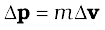. According to the Second Law,
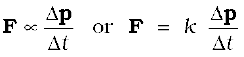
where k is a constant of proportionality. Taking the limit ∆t → 0, the term 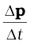 becomes the derivative or differential co-efficient of p with respect to t, denoted by 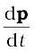. Thus
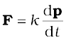 (5.2)
For a body of fixed mass m,
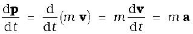 (5.3)
i.e the Second Law can also be written as
F = k m a (5.4)
which shows that force is proportional to the product of mass m and acceleration a.
The unit of force has not been defined so far. In fact, we use Eq. (5.4) to define the unit of force. We, therefore, have the liberty to choose any constant value for k. For simplicity, we choose k = 1. The second law then is
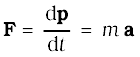 (5.5)
In SI unit force is one that causes an acceleration of 1 m s-2 to a mass of 1 kg. This unit is known as newton : 1 N = 1 kg m s-2.
Let us note at this stage some important points about the second law :
1. In the second law, F = 0 implies a = 0. The second law is obviously consistent with the first law.
2. The second law of motion is a vector law. It is equivalent to three equations, one for each component of the vectors :
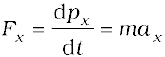
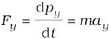
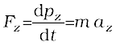 (5.6)
This means that if a force is not parallel to the velocity of the body, but makes some angle with it, it changes only the component of velocity along the direction of force. The component of velocity normal to the force remains unchanged. For example, in the motion of a projectile under the vertical gravitational force, the horizontal component of velocity remains unchanged (Fig. 5.5).
3. The second law of motion given by Eq. (5.5) is applicable to a single point particle. The force F in the law stands for the net external force on the particle and a stands for acceleration of the particle. It turns out, however, that the law in the same form applies to a rigid body or, even more generally, to a system of particles. In that case, F refers to the total external force on the system and a refers to the acceleration of the system as a whole. More precisely, a is the acceleration of the centre of mass of the system about which we shall study in detail in chapter 7. Any internal forces in the system are not to be included in F.
Fig. 5.5 Acceleration at an instant is determined by the force at that instant. The moment after a stone is dropped out of an accelerated train, it has no horizontal acceleration or force, if air resistance is neglected. The stone carries no memory of its acceleration with the train a moment ago.
4. The second law of motion is a local relation which means that force F at a point in space (location of the particle) at a certain instant of time is related to a at that point at that instant. Acceleration here and now is determined by the force here and now, not by any history of the motion of the particle (See Fig. 5.5).
Example 5.2 A bullet of mass 0.04 kg moving with a speed of 90 m s-1 enters a heavy wooden block and is stopped after a distance of 60 cm. What is the average resistive force exerted by the block on the bullet?
Answer The retardation ‘a’ of the bullet (assumed constant) is given by
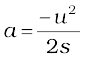= 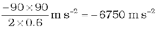
The retarding force, by the second law of
motion, is
= 0.04 kg × 6750 m s-2 = 270 N
The actual resistive force, and therefore, retardation of the bullet may not be uniform. The answer therefore, only indicates the average resistive force.
Example 5.3 The motion of a particle of mass is described by y = 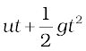. Find the force acting on the particle.
Answer We know
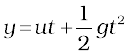
Now,
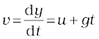
acceleration, 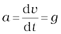
Then the force is given by Eq. (5.5)
F = ma = mg
Thus the given equation describes the motion of a particle under acceleration due to gravity and y is the position coordinate in the direction of g.
Impulse
We sometimes encounter examples where a large force acts for a very short duration producing a finite change in momentum of the body. For example, when a ball hits a wall and bounces back, the force on the ball by the wall acts for a very short time when the two are in contact, yet the force is large enough to reverse the momentum of the ball. Often, in these situations, the force and the time duration are difficult to ascertain separately. However, the product of force and time, which is the change in momentum of the body remains a measurable quantity. This product is called impulse:
Impulse = Force × time duration
= Change in momentum (5.7)
A large force acting for a short time to produce a finite change in momentum is called an impulsive force. In the history of science, impulsive forces were put in a conceptually different category from ordinary forces. Newtonian mechanics has no such distinction. Impulsive force is like any other force – except that it is large and acts for a short time.
Example 5.4 A batsman hits back a ball straight in the direction of the bowler without changing its initial speed of 12 m s–1. If the mass of the ball is 0.15 kg, determine the impulse imparted to the ball. (Assume linear motion of the ball)
Answer Change in momentum
= 0.15 × 12–(–0.15×12)
= 3.6 N s,
Impulse = 3.6 N s,
in the direction from the batsman to the bowler.
This is an example where the force on the ball by the batsman and the time of contact of the ball and the bat are difficult to know, but the impulse is readily calculated.
5.6 Newton’s Third Law of motion
The second law relates the external force on a body to its acceleration. What is the origin of the external force on the body ? What agency provides the external force ? The simple answer in Newtonian mechanics is that the external force on a body always arises due to some other body. Consider a pair of bodies A and B. B gives rise to an external force on A. A natural question is: Does A in turn give rise to an external force on B ? In some examples, the answer seems clear. If you press a coiled spring, the spring is compressed by the force of your hand. The compressed spring in turn exerts a force on your hand and you can feel it. But what if the bodies are not in contact ? The earth pulls a stone downwards due to gravity. Does the stone exert a force on the earth ? The answer is not obvious since we hardly see the effect of the stone on the earth. The answer according to Newton is: Yes, the stone does exert an equal and opposite force on the earth. We do not notice it since the earth is very massive and the effect of a small force on its motion is negligible.
Thus, according to Newtonian mechanics, force never occurs singly in nature. Force is the mutual interaction between two bodies. Forces always occur in pairs. Further, the mutual forces between two bodies are always equal and opposite. This idea was expressed by Newton in the form of the third law of motion.
To every action, there is always an equal and opposite reaction.
Newton’s wording of the third law is so crisp and beautiful that it has become a part of common language. For the same reason perhaps, misconceptions about the third law abound. Let us note some important points about the third law, particularly in regard to the usage of the terms : action and reaction.
1. The terms action and reaction in the third law mean nothing else but ‘force’. Using different terms for the same physical concept can sometimes be confusing. A simple and clear way of stating the third law is as follows:
Forces always occur in pairs. Force on a body A by B is equal and opposite to the force on the body B by A.
2. The terms action and reaction in the third law may give a wrong impression that action comes before reaction i.e action is the cause and reaction the effect. There is no cause-effect relation implied in the third law. The force on A by B and the force on B by A act at the same instant. By the same reasoning, any one of them may be called action and the other reaction.
3. Action and reaction forces act on different bodies, not on the same body. Consider a pair of bodies A and B. According to the third law,
FAB = – FBA (5.8)
(force on A by B) = – (force on B by A)
Thus if we are considering the motion of any one body (A or B), only one of the two forces is relevant. It is an error to add up the two forces and claim that the net force is zero.
Isaac Newton (1642 – 1727)
Isaac Newton was born in Woolsthorpe, England in 1642, the year Galileo died. His extraordinary mathematical ability and mechanical aptitude remained hidden from others in his school life. In 1662, he went to Cambridge for undergraduate studies. A plague epidemic in 1665 forced the university town to close and Newton had to return to his mother’s farm. There in two years of solitude, his dormant creativity blossomed in a deluge of fundamental discoveries in mathematics and physics : binomial theorem for negative and fractional exponents, the beginning of calculus, the inverse square law of gravitation, the spectrum of white light, and so on. Returning to Cambridge, he pursued his investigations in optics and devised a reflecting telescope.
In 1684, encouraged by his friend Edmund Halley, Newton embarked on writing what was to be one of the greatest scientific works ever published : The Principia Mathematica. In it, he enunciated the three laws of motion and the universal law of gravitation, which explained all the three Kepler’s laws of planetary motion. The book was packed with a host of path-breaking achievements : basic principles of fluid mechanics, mathematics of wave motion, calculation of masses of the earth, the sun and other planets, explanation of the precession of equinoxes, theory of tides, etc. In 1704, Newton brought out another masterpiece Opticks that summarized his work on light and colour.
SSThe scientific revolution triggered by Copernicus and steered vigorously ahead by Kepler and Galileo was brought to a grand completion by Newton. Newtonian mechanics unified terrestrial and celestial phenomena. The same mathematical equation governed the fall of an apple to the ground and the motion of the moon around the earth. The age of reason had dawned.
However, if you are considering the system of two bodies as a whole, FAB and FBA are internal forces of the system (A + B). They add up to give a null force. Internal forces in a body or a system of particles thus cancel away in pairs. This is an important fact that enables the second law to be applicable to a body or a system of particles (See Chapter 7).
Example 5.5 Two identical billiard balls strike a rigid wall with the same speed but at different angles, and get reflected without any change in speed, as shown in Fig. 5.6. What is (i) the direction of the force on the wall due to each ball? (ii) the ratio of the magnitudes of impulses imparted to the balls by the wall ?
Fig. 5.6
Answer An instinctive answer to (i) might be that the force on the wall in case (a) is normal to the wall, while that in case (b) is inclined at 30° to the normal. This answer is wrong. The force on the wall is normal to the wall in both cases.
How to find the force on the wall? The trick is to consider the force (or impulse) on the ball due to the wall using the second law, and then use the third law to answer (i). Let u be the speed of each ball before and after collision with the wall, and m the mass of each ball. Choose the x and y axes as shown in the figure, and consider the change in momentum of the ball in each
case :
Case (a)
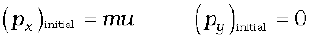
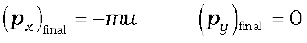
Impulse is the change in momentum vector. Therefore,
x-component of impulse = – 2 m u
y-component of impulse = 0
Impulse and force are in the same direction. Clearly, from above, the force on the ball due to the wall is normal to the wall, along the negative x-direction. Using Newton’s third law of motion, the force on the wall due to the ball is normal to the wall along the positive x-direction. The magnitude of force cannot be ascertained since the small time taken for the collision has not been specified in the problem.
Case (b)
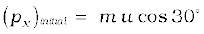, 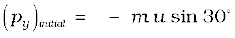
 , 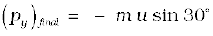
, 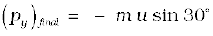
Note, while px changes sign after collision, py does not. Therefore,
x-component of impulse = –2 m u cos 30°
y-component of impulse = 0
The direction of impulse (and force) is the same as in (a) and is normal to the wall along the negative x direction. As before, using Newton’s third law, the force on the wall due to the ball is normal to the wall along the positive x direction.
The ratio of the magnitudes of the impulses imparted to the balls in (a) and (b) is
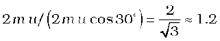
5.7 Conservation of momentum
The second and third laws of motion lead to an important consequence: the law of conservation of momentum. Take a familiar example. A bullet is fired from a gun. If the force on the bullet by the gun is F, the force on the gun by the bullet is – F, according to the third law. The two forces act for a common interval of time ∆t. According to the second law, F ∆t is the change in momentum of the bullet and – F ∆t is the change in momentum of the gun. Since initially, both are at rest, the change in momentum equals the final momentum for each. Thus if pb is the momentum of the bullet after firing and pg is the recoil momentum of the gun, pg = – pb i.e. pb + pg = 0. That is, the total momentum of the (bullet + gun) system is conserved.
Thus in an isolated system (i.e. a system with no external force), mutual forces between pairs of particles in the system can cause momentum change in individual particles, but since the mutual forces for each pair are equal and opposite, the momentum changes cancel in pairs and the total momentum remains unchanged. This fact is known as the law of conservation of momentum :
The total momentum of an isolated system of interacting particles is conserved.
An important example of the application of the law of conservation of momentum is the collision of two bodies. Consider two bodies A and B, with initial momenta pA and pB. The bodies collide, get apart, with final momenta p′A and p′B respectively. By the Second Law
and
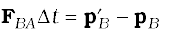
(where we have taken a common interval of time for both forces i.e. the time for which the two bodies are in contact.)
Since by the third law,
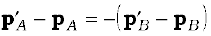
i.e. 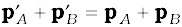 (5.9)
which shows that the total final momentum of the isolated system equals its initial momentum. Notice that this is true whether the collision is elastic or inelastic. In elastic collisions, there is a second condition that the total initial kinetic energy of the system equals the total final kinetic energy (See Chapter 6).
5.8 Equilibrium of a particle
Equilibrium of a particle in mechanics refers to the situation when the net external force on the particle is zero.* According to the first law, this means that, the particle is either at rest or in uniform motion.
If two forces F1 and F2, act on a particle, equilibrium requires
F1 = − F2 (5.10)
i.e. the two forces on the particle must be equal and opposite. Equilibrium under three concurrent forces F1, F2 and F3 requires that the vector sum of the three forces is zero.
F1 + F2 + F3 = 0 (5.11)

Fig. 5.7 Equilibrium under concurrent forces.
In other words, the resultant of any two forces say F1 and F2, obtained by the parallelogram law of forces must be equal and opposite to the third force, F3. As seen in Fig. 5.7, the three forces in equilibrium can be represented by the sides of a triangle with the vector arrows taken in the same sense. The result can be generalised to any number of forces. A particle is in equilibrium under the action of forces F1, F2,... Fn if they can be represented by the sides of a closed n-sided polygon with arrows directed in the same sense.
Equation (5.11) implies that
F1x + F2x + F3x = 0
F1y + F2y + F3y = 0
F1z + F2z + F3z = 0 (5.12)
where F1x, F1y and F1z are the components of F1 along x, y and z directions respectively.
Example 5.6 See Fig. 5.8 A mass of 6 kg is suspended by a rope of length 2 m from the ceiling. A force of 50 N in the horizontal direction is applied at the mid-point P of the rope, as shown. What is the angle the rope makes with the vertical in equilibrium ? (Take g= 10 m s-2). Neglect the mass of the rope.
(a) (b) (c)
Fig. 5.8
* Equilibrium of a body requires not only translational equilibrium (zero net external force) but also rotational equilibrium (zero net external torque), as we shall see in Chapter 7.
Answer Figures 5.8(b) and 5.8(c) are known as free-body diagrams. Figure 5.8(b) is the free-body diagram of W and Fig. 5.8(c) is the free-body diagram of point P.
Consider the equilibrium of the weight W. Clearly,T2 = 6 × 10 = 60 N.
Consider the equilibrium of the point P under the action of three forces - the tensions T1 and T2, and the horizontal force 50 N. The horizontal and vertical components of the resultant force must vanish separately :
T1 cos θ = T2 = 60 N
T1 sin θ = 50 N
which gives that
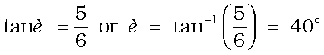
Note the answer does not depend on the length of the rope (assumed massless) nor on the point at which the horizontal force is applied.
5.9 COMMON FORCES IN MECHANICS
In mechanics, we encounter several kinds of forces. The gravitational force is, of course, pervasive. Every object on the earth experiences the force of gravity due to the earth. Gravity also governs the motion of celestial bodies. The gravitational force can act at a distance without the need of any intervening medium.
All the other forces common in mechanics are contact forces.* As the name suggests, a contact force on an object arises due to contact with some other object: solid or fluid. When bodies are in contact (e.g. a book resting on a table, a system of rigid bodies connected by rods, hinges and other types of supports), there are mutual contact forces (for each pair of bodies) satisfying the third law. The component of contact force normal to the surfaces in contact is called normal reaction. The component parallel to the surfaces in contact is called friction. Contact forces arise also when solids are in contact with fluids. For example, for a solid immersed in a fluid, there is an upward bouyant force equal to the weight of the fluid displaced. The viscous force, air resistance, etc are also examples of contact forces (Fig. 5.9).
Two other common forces are tension in a string and the force due to spring. When a spring is compressed or extended by an external force, a restoring force is generated. This force is usually proportional to the compression or elongation (for small displacements). The spring force F is written as F = – k x where x is the displacement and k is the force constant. The
negative sign denotes that the force is opposite to the displacement from the unstretched state. For an inextensible string, the force constant is very high. The restoring force in a string is called tension. It is customary to use a constant tension T throughout the string. This assumption is true for a string of negligible mass.

In Chapter 1, we learnt that there are four fundamental forces in nature. Of these, the weak and strong forces appear in domains that do not concern us here. Only the gravitational and electrical forces are relevant in the context of mechanics. The different contact forces of mechanics mentioned above fundamentally arise from electrical forces. This may seem surprising since we are talking of uncharged and non-magnetic bodies in mechanics. At the microscopic level, all bodies are made of charged constituents (nuclei and electrons) and the various contact forces arising due to elasticity of bodies, molecular collisions and impacts, etc. can ultimately be traced to the electrical forces between the charged constituents of different bodies. The detailed microscopic origin of these forces is, however, complex and not useful for handling problems in mechanics at the macroscopic scale. This is why they are treated as different types of forces with their characteristic properties determined empirically.
*We are not considering, for simplicity, charged and magnetic bodies. For these, besides gravity, there are electrical and magnetic non-contact forces.
5.9.1 Friction
Let us return to the example of a body of mass m at rest on a horizontal table. The force of gravity (mg) is cancelled by the normal reaction force (N) of the table. Now suppose a force F is applied horizontally to the body. We know from experience that a small applied force may not be enough to move the body. But if the applied force F were the only external force on the body, it must move with acceleration F/m, however small. Clearly, the body remains at rest because some other force comes into play in the horizontal direction and opposes the applied force F, resulting in zero net force on the body. This force fs parallel to the surface of the body in contact with the table is known as frictional force, or simply friction (Fig. 5.10(a)). The subscript stands for static friction to distinguish it from kinetic friction fk that we consider later (Fig. 5.10(b)). Note that static friction does not

Fig. 5.10 Static and sliding friction: (a) Impending motion of the body is opposed by static friction. When external force exceeds the maximum limit of static friction, the body begins to move. (b) Once the body is in motion, it is subject to sliding or kinetic friction which opposes relative motion between the two surfaces in contact. Kinetic friction is usually less than the maximum value of static friction.
exist by itself. When there is no applied force, there is no static friction. It comes into play the moment there is an applied force. As the applied force F increases, fs also increases, remaining equal and opposite to the applied force (up to a certain limit), keeping the body at rest. Hence, it is called static friction. Static friction opposes impending motion. The term impending motion means motion that would take place (but does not actually take place) under the applied force, if friction were absent.
We know from experience that as the applied force exceeds a certain limit, the body begins to move. It is found experimentally that the limiting value of static friction  is independent of the area of contact and varies with the normal force(N) approximately as :
is independent of the area of contact and varies with the normal force(N) approximately as :
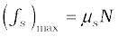 (5.13)
where µs is a constant of proportionality depending only on the nature of the surfaces in contact. The constant µs is called the coefficient of static friction. The law of static friction may thus be written as
fs ≤ µs N (5.14)
If the applied force F exceeds  the body begins to slide on the surface. It is found experimentally that when relative motion has started, the frictional force decreases from the static maximum value 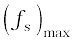. Frictional force that opposes relative motion between surfaces in contact is called kinetic or sliding friction and is denoted by fk . Kinetic friction, like static friction, is found to be independent of the area of contact. Further, it is nearly independent of the velocity. It satisfies a law similar to that for static friction:
the body begins to slide on the surface. It is found experimentally that when relative motion has started, the frictional force decreases from the static maximum value 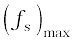. Frictional force that opposes relative motion between surfaces in contact is called kinetic or sliding friction and is denoted by fk . Kinetic friction, like static friction, is found to be independent of the area of contact. Further, it is nearly independent of the velocity. It satisfies a law similar to that for static friction:
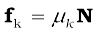 (5.15)
where µk′ the coefficient of kinetic friction, depends only on the surfaces in contact. As mentioned above, experiments show that µk is less than µs. When relative motion has begun, the acceleration of the body according to the second law is ( F – fk )/m. For a body moving with constant velocity, F = fk. If the applied force on the body is removed, its acceleration is – fk /m and it eventually comes to a stop.
The laws of friction given above do not have the status of fundamental laws like those for gravitational, electric and magnetic forces. They are empirical relations that are only approximately true. Yet they are very useful in practical calculations in mechanics.
Thus, when two bodies are in contact, each experiences a contact force by the other. Friction, by definition, is the component of the contact force parallel to the surfaces in contact, which opposes impending or actual relative motion between the two surfaces. Note that it is not motion, but relative motion that the frictional force opposes. Consider a box lying in the compartment of a train that is accelerating. If the box is stationary relative to the train, it is in fact accelerating along with the train. What forces cause the acceleration of the box? Clearly, the only conceivable force in the horizontal direction is the force of friction. If there were no friction, the floor of the train would slip by and the box would remain at its initial position due to inertia (and hit the back side of the train). This impending relative motion is opposed by the static friction fs. Static friction provides the same acceleration to the box as that of the train, keeping it stationary relative to the train.
Example 5.7 Determine the maximum acceleration of the train in which a box lying on its floor will remain stationary, given that the co-efficient of static friction between the box and the train’s floor is 0.15.
Answer Since the acceleration of the box is due to the static friction,
ma = fs ≤ µs N = µs m g
i.e. a ≤ µs g
∴ amax = µs g = 0.15 x 10 m s–2
= 1.5 m s–2
Example 5.8 See Fig. 5.11. A mass of 4 kg rests on a horizontal plane. The plane is gradually inclined until at an angle θ = 15° with the horizontal, the mass just begins to slide. What is the coefficient of static friction between the block and the surface ?

Fig. 5.11
Answer The forces acting on a block of mass m at rest on an inclined plane are (i) the weight mg acting vertically downwards (ii) the normal force N of the plane on the block, and (iii) the static frictional force fs opposing the impending motion. In equilibrium, the resultant of these forces must be zero. Resolving the weight mg along the two directions shown, we have
m g sin θ = fs , m g cos θ = N
As θ increases, the self-adjusting frictional force fs increases until at θ = θmax, fs achieves its maximum value,  = µs N.
= µs N.
Therefore,
tan θmax = µs or θmax = tan–1 µs
When θ becomes just a little more than θmax , there is a small net force on the block and it begins to slide. Note that θmax depends only on µs and is independent of the mass of the block.
For θmax = 15°,
µs = tan 15°
= 0.27
Example 5.9 What is the acceleration of the block and trolley system shown in a Fig. 5.12(a), if the coefficient of kinetic friction between the trolley and the surface is 0.04? What is the tension in the string? (Take g = 10 m s-2). Neglect the mass of the string.

(c)
Fig. 5.12
Answer As the string is inextensible, and the pully is smooth, the 3 kg block and the 20 kg trolley both have same magnitude of acceleration. Applying second law to motion of the block (Fig. 5.12(b)),
30 – T = 3a
Apply the second law to motion of the trolley (Fig. 5.12(c)),
T – fk = 20 a.
Now fk = µk N,
Here µk = 0.04,
N = 20 x 10
= 200 N.
Thus the equation for the motion of the trolley is
T – 0.04 x 200 = 20 a Or T – 8 = 20a.
These equations give a = 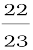 ms –2 = 0.96 m s-2 and T = 27.1 N.
Rolling friction
A body like a ring or a sphere rolling without slipping over a horizontal plane will suffer no friction, in principle. At every instant, there is just one point of contact between the body and the plane and this point has no motion relative to the plane. In this ideal situation, kinetic or static friction is zero and the body should continue to roll with constant velocity. We know, in practice, this will not happen and some resistance to motion (rolling friction) does occur, i.e. to keep the body rolling, some applied force is needed. For the same weight, rolling friction is much smaller (even by 2 or 3 orders of magnitude) than static or sliding friction. This is the reason why discovery of the wheel has been a major milestone in human history.
Rolling friction again has a complex origin, though somewhat different from that of static and sliding friction. During rolling, the surfaces in contact get momentarily deformed a little, and this results in a finite area (not a point) of the body being in contact with the surface. The net effect is that the component of the contact force parallel to the surface opposes motion.
We often regard friction as something undesirable. In many situations, like in a machine with different moving parts, friction does have a negative role. It opposes relative motion and thereby dissipates power in the form of heat, etc. Lubricants are a way of reducing kinetic friction in a machine. Another way is to use ball bearings between two moving parts of a machine [Fig. 5.13(a)]. Since the rolling friction between ball bearings and the surfaces in contact is very small, power dissipation is reduced. A thin cushion of air maintained between solid surfaces in relative motion is another effective way of reducing friction (Fig. 5.13(a)).
In many practical situations, however, friction is critically needed. Kinetic friction that dissipates power is nevertheless important for quickly stopping relative motion. It is made use of by brakes in machines and automobiles. Similarly, static friction is important in daily life. We are able to walk because of friction. It is impossible for a car to move on a very slippery road. On an ordinary road, the friction between the tyres and the road provides the necessary external force to accelerate the car.

5.10 Circular motion
We have seen in Chapter 4 that acceleration of a body moving in a circle of radius R with uniform speed v is v2/R directed towards the centre. According to the second law, the force fc providing this acceleration is :
 (5.16)
(5.16)
where m is the mass of the body. This force directed forwards the centre is called the centripetal force. For a stone rotated in a circle by a string, the centripetal force is provided by the tension in the string. The centripetal force for motion of a planet around the sun is the gravitational force on the planet due to the sun. For a car taking a circular turn on a horizontal road, the centripetal force is the force of friction.

(a) (b)
Fig. 5.14 Circular motion of a car on (a) a level road, (b) a banked road.
The circular motion of a car on a flat and banked road give interesting application of the laws of motion.
Motion of a car on a level road
Three forces act on the car (Fig. 5.14(a):
(i) The weight of the car, mg
(ii) Normal reaction, N
(iii) Frictional force, f
As there is no acceleration in the vertical direction
N – mg = 0
N = mg (5.17)
The centripetal force required for circular motion is along the surface of the road, and is provided by the component of the contact force between road and the car tyres along the surface. This by definition is the frictional force. Note that it is the static friction that provides the centripetal acceleration. Static friction opposes the impending motion of the car moving away from the circle. Using equation (5.14) & (5.16) we get the result
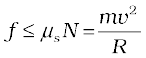
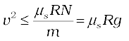 [ N = mg]
N = mg]
which is independent of the mass of the car.
This shows that for a given value of µs and R, there is a maximum speed of circular motion of the car possible, namely
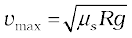 (5.18)
Motion of a car on a banked road
We can reduce the contribution of friction to the circular motion of the car if the road is banked (Fig. 5.14(b)). Since there is no acceleration along the vertical direction, the net force along this direction must be zero. Hence,
N cos 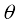 = mg + f sin  (5.19a)
(5.19a)
The centripetal force is provided by the horizontal components of N and f.
N sin  + f cos
+ f cos  = 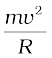 (5.19b)
= 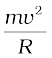 (5.19b)
But f 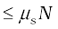
Thus to obtain vmax we put
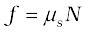.
Then Eqs. (5.19a) and (5.19b) become
N cos  = mg +
= mg +  sin
sin  (5.20a)
(5.20a)
N sin  + 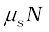cos
+ 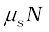cos  = mv2/R (5.20b)
= mv2/R (5.20b)
From Eq. (5.20a), we obtain
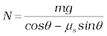
Substituting value of N in Eq. (5.20b), we get
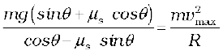
or 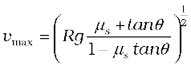 (5.21)
Comparing this with Eq. (5.18) we see that maximum possible speed of a car on a banked road is greater than that on a flat road.
For µs = 0 in Eq. (5.21 ),
vo = ( R g tan θ ) ½ (5.22)
At this speed, frictional force is not needed at all to provide the necessary centripetal force. Driving at this speed on a banked road will cause little wear and tear of the tyres. The same equation also tells you that for v < vo, frictional force will be up the slope and that a car can be parked only if tan θ ≤ µs.
Example 5.10 A cyclist speeding at 18 km/h on a level road takes a sharp circular turn of radius 3 m without reducing the speed. The co-efficient of static friction between the tyres and the road is 0.1. Will the cyclist slip while taking the turn ?
Answer On an unbanked road, frictional force alone can provide the centripetal force needed to keep the cyclist moving on a circular turn without slipping. If the speed is too large, or if the turn is too sharp (i.e. of too small a radius) or both, the frictional force is not sufficient to provide the necessary centripetal force, and the cyclist slips. The condition for the cyclist not to slip is given by Eq. (5.18) :
v2 ≤ µs R g
Now, R = 3 m, g = 9.8 ms-2, µs = 0.1. That is, µs R g = 2.94 m2s-2. v = 18 km/h = 5 ms-1; i.e., v2 = 25 m2 s-2. The condition is not obeyed. The cyclist will slip while taking the circular turn.
Example 5.11 A circular racetrack of radius 300 m is banked at an angle of 15°. If the coefficient of friction between the wheels of a race-car and the road is 0.2, what is the (a) optimum speed of the race-car to avoid wear and tear on its tyres, and (b) maximum permissible speed to avoid slipping ?
Answer On a banked road, the horizontal component of the normal force and the frictional force contribute to provide centripetal force to keep the car moving on a circular turn without slipping. At the optimum speed, the normal reaction’s component is enough to provide the needed centripetal force, and the frictional force is not needed. The optimum speed vo is given by Eq. (5.22):
vO = (R g tan θ)1/2
Here R = 300 m, θ = 15°, g = 9.8 ms-2; we have
vO = 28.1 m s-1.
The maximum permissible speed vmax is given by Eq. (5.21):
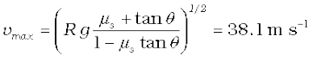
5.11 Solving problems in mechanics
The three laws of motion that you have learnt in this chapter are the foundation of mechanics. You should now be able to handle a large variety of problems in mechanics. A typical problem in mechanics usually does not merely involve a single body under the action of given forces. More often, we will need to consider an assembly of different bodies exerting forces on each other. Besides, each body in the assembly experiences the force of gravity. When trying to solve a problem of this type, it is useful to remember the fact that we can choose any part of the assembly and apply the laws of motion to that part provided we include all forces on the chosen part due to the remaining parts of the assembly. We may call the chosen part of the assembly as the system and the remaining part of the assembly (plus any other agencies of forces) as the environment. We have followed the same method in solved examples. To handle a typical problem in mechanics systematically, one should use the following steps :
(i) Draw a diagram showing schematically the various parts of the assembly of bodies, the links, supports, etc.
(ii) Choose a convenient part of the assembly as one system.
(iii) Draw a separate diagram which shows this system and all the forces on the system by the remaining part of the assembly. Include also the forces on the system by other agencies. Do not include the forces on the environment by the system. A diagram of this type is known as ‘a free-body diagram’. (Note this does not imply that the system under consideration is without a net force).
(iv) In a free-body diagram, include information about forces (their magnitudes and directions) that are either given or you are sure of (e.g., the direction of tension in a string along its length). The rest should be treated as unknowns to be determined using laws of motion.
(v) If necessary, follow the same procedure for another choice of the system. In doing so, employ Newton’s third law. That is, if in the free-body diagram of A, the force on A due to B is shown as F, then in the free-body diagram of B, the force on B due to A should be shown as –F.
The following example illustrates the above procedure :
Example 5.12 See (Fig. 5.15) A wooden block of mass 2 kg rests on a soft horizontal floor. When an iron cylinder of mass 25 kg is placed on top of the block, the floor yields steadily and the block and the cylinder together go down with an acceleration of 0.1 m s–2. What is the action of the block on the floor (a) before and (b) after the floor yields ? Take g = 10 m s–2. Identify the action-reaction pairs in the problem.
Answer
(a) The block is at rest on the floor. Its free-body diagram shows two forces on the block, the force of gravitational attraction by the earth equal to 2 × 10 = 20 N; and the normal force R of the floor on the block. By the First Law, the net force on the block must be zero i.e., R = 20 N. Using third law the action of the block (i.e. the force exerted on the floor by the block) is equal to 20 N and directed vertically downwards.
(b) The system (block + cylinder) accelerates downwards with 0.1 m s-2. The free-body diagram of the system shows two forces on the system : the force of gravity due to the earth (270 N); and the normal force R′ by the floor. Note, the free-body diagram of the system does not show the internal forces between the block and the cylinder. Applying the second law to the system,
270 – R′ = 27 × 0.1N
ie. R′ = 267.3 N

Fig. 5.15
By the third law, the action of the system on the floor is equal to 267.3 N vertically downward.
Action-reaction pairs
For (a): (i) the force of gravity (20 N) on the block by the earth (say, action); the force of gravity on the earth by the block (reaction) equal to 20 N directed upwards (not shown in the figure).
(ii) the force on the floor by the block (action); the force on the block by the floor (reaction).
For (b): (i) the force of gravity (270 N) on the system by the earth (say, action); the force of gravity on the earth by the system (reaction), equal to 270 N, directed upwards (not shown in the figure).
(ii) the force on the floor by the system (action); the force on the system by the floor (reaction). In addition, for (b), the force on the block by the cylinder and the force on the cylinder by the block also constitute an action-reaction pair.
The important thing to remember is that an action-reaction pair consists of mutual forces which are always equal and opposite between two bodies. Two forces on the same body which happen to be equal and opposite can never constitute an action-reaction pair. The force of gravity on the mass in (a) or (b) and the normal force on the mass by the floor are not action-reaction pairs. These forces happen to be equal and opposite for (a) since the mass is at rest. They are not so for case (b), as seen already. The weight of the system is 270 N, while the normal force R′ is 267.3 N.
The practice of drawing free-body diagrams is of great help in solving problems in mechanics. It allows you to clearly define your system and consider all forces on the system due to objects that are not part of the system itself. A number of exercises in this and subsequent chapters will help you cultivate this practice.
SUMMARY
1. Aristotle’s view that a force is necessary to keep a body in uniform motion is wrong. A force is necessary in practice to counter the opposing force of friction.
2. Galileo extrapolated simple observations on motion of bodies on inclined planes, and arrived at the law of inertia. Newton’s first law of motion is the same law rephrased thus: “Everybody continues to be in its state of rest or of uniform motion in a straight line, unless compelled by some external force to act otherwise”. In simple terms, the First Law is “If external force on a body is zero, its acceleration is zero”.
3. Momentum (p ) of a body is the product of its mass (m) and velocity (v) :
p = m v
4. Newton’s second law of motion :
The rate of change of momentum of a body is proportional to the applied force and takes place in the direction in which the force acts. Thus
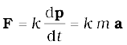
where F is the net external force on the body and a its acceleration. We set the constant of proportionality k = 1 in SI units. Then
The SI unit of force is newton : 1 N = 1 kg m s-2.
(a) The second law is consistent with the First Law (F = 0 implies a = 0)
(b) It is a vector equation
(c) It is applicable to a particle, and also to a body or a system of particles, provided F is the total external force on the system and a is the acceleration of the system as a whole.
(d) F at a point at a certain instant determines a at the same point at that instant. That is the Second Law is a local law; a at an instant does not depend on the history of motion.
5. Impulse is the product of force and time which equals change in momentum. The notion of impulse is useful when a large force acts for a short time to produce a measurable change in momentum. Since the time of action of the force is very short, one can assume that there is no appreciable change in the position of the body during the action of the impulsive force.
6. Newton’s third law of motion:
To every action, there is always an equal and opposite reaction
In simple terms, the law can be stated thus :
Forces in nature always occur between pairs of bodies. Force on a body A by body B is equal and opposite to the force on the body B by A.
Action and reaction forces are simultaneous forces. There is no cause-effect relation between action and reaction. Any of the two mutual forces can be called action and the other reaction. Action and reaction act on different bodies and so they cannot be cancelled out. The internal action and reaction forces between different parts of a body do, however, sum to zero.
7. Law of Conservation of Momentum
The total momentum of an isolated system of particles is conserved. The law follows from the second and third law of motion.
8. Friction
Frictional force opposes (impending or actual) relative motion between two surfaces in contact. It is the component of the contact force along the common tangent to the surface in contact. Static friction fs opposes impending relative motion; kinetic friction fk opposes actual relative motion. They are independent of the area of contact and satisfy the following approximate laws :
µs (co-efficient of static friction) and µk (co-efficient of kinetic friction) are constants characteristic of the pair of surfaces in contact. It is found experimentally that µk is less than µs .

POINTS TO PONDER
1. Force is not always in the direction of motion. Depending on the situation, F may be along v , opposite to v , normal to v or may make some other angle with v . In every case, it is parallel to acceleration.
2. If v = 0 at an instant, i.e. if a body is momentarily at rest, it does not mean that force or acceleration are necessarily zero at that instant. For example, when a ball thrown upward reaches its maximum height, v = 0 but the force continues to be its weight mg and the acceleration is not zero but g.
3. Force on a body at a given time is determined by the situation at the location of the body at that time. Force is not ‘carried’ by the body from its earlier history of motion. The moment after a stone is released out of an accelerated train, there is no horizontal force (or acceleration) on the stone, if the effects of the surrounding air are neglected. The stone then has only the vertical force of gravity.
4. In the second law of motion F = m a, F stands for the net force due to all material agencies external to the body. a is the effect of the force. ma should not be regarded as yet another force, besides F.
5. The centripetal force should not be regarded as yet another kind of force. It is simply a name given to the force that provides inward radial acceleration to a body in circular motion. We should always look for some material force like tension, gravitational force, electrical force, friction, etc as the centripetal force in any circular motion.
6. Static friction is a self-adjusting force up to its limit µs N (fs ≤ µs N). Do not put fs= µs N without being sure that the maximum value of static friction is coming into play.
7. The familiar equation mg = R for a body on a table is true only if the body is in equilibrium. The two forces mg and R can be different (e.g. a body in an accelerated lift). The equality of mg and R has no connection with the third law.
8. The terms ‘action’ and ‘reaction’ in the third Law of Motion simply stand for simultaneous mutual forces between a pair of bodies. Unlike their meaning in ordinary language, action does not precede or cause reaction. Action and reaction act on different bodies.
9. The different terms like ‘friction’, ‘normal reaction’ ‘tension’, ‘air resistance’, ‘viscous drag’, ‘thrust’, ‘buoyancy’ ‘weight’ ‘centripetal force’ all stand for ‘force’ in different contexts. For clarity, every force and its equivalent terms encountered in mechanics should be reduced to the phrase ‘force on A by B’.
10. For applying the second law of motion, there is no conceptual distinction between inanimate and animate objects. An animate object such as a human also requires an external force to accelerate. For example, without the external force of friction, we cannot walk on the ground.
11. The objective concept of force in physics should not be confused with the subjective concept of the ‘feeling of force’. On a merry-go-around, all parts of our body are subject to an inward force, but we have a feeling of being pushed outward – the direction of impending motion.
Exercises
(For simplicity in numerical calculations, take g = 10 m s-2)
5.1 Give the magnitude and direction of the net force acting on
(a) a drop of rain falling down with a constant speed,
(b) a cork of mass 10 g floating on water,
(c) a kite skillfully held stationary in the sky,
(d) a car moving with a constant velocity of 30 km/h on a rough road,
(e) a high-speed electron in space far from all material objects, and free of electric and magnetic fields.
5.2 A pebble of mass 0.05 kg is thrown vertically upwards. Give the direction and magnitude of the net force on the pebble,
(a) during its upward motion,
(b) during its downward motion,
(c) at the highest point where it is momentarily at rest. Do your answers change if the pebble was thrown at an angle of 45° with the horizontal direction? Ignore air resistance.
5.3 Give the magnitude and direction of the net force acting on a stone of mass 0.1 kg,
(a) just after it is dropped from the window of a stationary train,
(b) just after it is dropped from the window of a train running at a constant velocity of 36 km/h,
(c ) just after it is dropped from the window of a train accelerating with 1 m s-2,
(d) lying on the floor of a train which is accelerating with 1 m s-2, the stone being at rest relative to the train.
Neglect air resistance throughout.
5.4 One end of a string of length l is connected to a particle of mass m and the other to a small peg on a smooth horizontal table. If the particle moves in a circle with speed v the net force on the particle (directed towards the centre) is :
(i) T, (ii) , (iii) , (iv) 0
T is the tension in the string. [Choose the correct alternative].
5.5 A constant retarding force of 50 N is applied to a body of mass 20 kg moving initially with a speed of 15 m s-1. How long does the body take to stop ?
5.6 A constant force acting on a body of mass 3.0 kg changes its speed from 2.0 m s-1 to 3.5 m s-1 in 25 s. The direction of the motion of the body remains unchanged. What is the magnitude and direction of the force ?
5.7 A body of mass 5 kg is acted upon by two perpendicular forces 8 N and 6 N. Give the magnitude and direction of the acceleration of the body.
5.8 The driver of a three-wheeler moving with a speed of 36 km/h sees a child standing in the middle of the road and brings his vehicle to rest in 4.0 s just in time to save the child. What is the average retarding force on the vehicle ? The mass of the three-wheeler is 400 kg and the mass of the driver is 65 kg.
5.9 A rocket with a lift-off mass 20,000 kg is blasted upwards with an initial acceleration of 5.0 m s-2. Calculate the initial thrust (force) of the blast.
5.10 A body of mass 0.40 kg moving initially with a constant speed of 10 m s-1 to the north is subject to a constant force of 8.0 N directed towards the south for 30 s. Take the instant the force is applied to be t = 0, the position of the body at that time to be x = 0, and predict its position at t = –5 s, 25 s, 100 s.
5.11 A truck starts from rest and accelerates uniformly at 2.0 m s-2. At t = 10 s, a stone is dropped by a person standing on the top of the truck (6 m high from the ground). What are the (a) velocity, and (b) acceleration of the stone at t = 11s ? (Neglect air resistance.)
5.12 A bob of mass 0.1 kg hung from the ceiling of a room by a string 2 m long is set into oscillation. The speed of the bob at its mean position is 1 m s-1. What is the trajectory of the bob if the string is cut when the bob is (a) at one of its extreme positions, (b) at its mean position.
5.13 A man of mass 70 kg stands on a weighing scale in a lift which is moving
(a) upwards with a uniform speed of 10 m s-1,
(b) downwards with a uniform acceleration of 5 m s-2,
(c) upwards with a uniform acceleration of 5 m s-2.
What would be the readings on the scale in each case?
(d) What would be the reading if the lift mechanism failed and it hurtled down freely under gravity ?
5.14 Figure 5.16 shows the position-time graph of a particle of mass 4 kg. What is the (a) force on the particle for t < 0, t > 4 s, 0 < t < 4 s? (b) impulse at t = 0 and t = 4 s ? (Consider one-dimensional motion only).

Fig. 5.16
5.15 Two bodies of masses 10 kg and 20 kg respectively kept on a smooth, horizontal surface are tied to the ends of a light string. a horizontal force F = 600 N is applied to (i) A, (ii) B along the direction of string. What is the tension in the string in each case?
5.16 Two masses 8 kg and 12 kg are connected at the two ends of a light inextensible string that goes over a frictionless pulley. Find the acceleration of the masses, and the tension in the string when the masses are released.
5.17 A nucleus is at rest in the laboratory frame of reference. Show that if it disintegrates into two smaller nuclei the products must move in opposite directions.
5.18 Two billiard balls each of mass 0.05 kg moving in opposite directions with speed 6 m s-1 collide and rebound with the same speed. What is the impulse imparted to each ball due to the other ?
5.19 A shell of mass 0.020 kg is fired by a gun of mass 100 kg. If the muzzle speed of the shell is 80 m s-1, what is the recoil speed of the gun ?
5.20 A batsman deflects a ball by an angle of 45° without changing its initial speed which is equal to 54 km/h. What is the impulse imparted to the ball ? (Mass of the ball is 0.15 kg.)
5.21 A stone of mass 0.25 kg tied to the end of a string is whirled round in a circle of radius 1.5 m with a speed of 40 rev./min in a horizontal plane. What is the tension in the string ? What is the maximum speed with which the stone can be whirled around if the string can withstand a maximum tension of 200 N ?
5.22 If, in Exercise 5.21, the speed of the stone is increased beyond the maximum permissible value, and the string breaks suddenly, which of the following correctly describes the trajectory of the stone after the string breaks :
(a) the stone moves radially outwards,
(b) the stone flies off tangentially from the instant the string breaks,
(c) the stone flies off at an angle with the tangent whose magnitude depends on the speed of the particle ?
5.23 Explain why
(a) a horse cannot pull a cart and run in empty space,
(b) passengers are thrown forward from their seats when a speeding bus stops suddenly,
(c) it is easier to pull a lawn mower than to push it,
(d) a cricketer moves his hands backwards while holding a catch.
Additional Exercises
5.24 Figure 5.17 shows the position-time graph of a body of mass 0.04 kg. Suggest a suitable physical context for this motion. What is the time between two consecutive impulses received by the body ? What is the magnitude of each impulse ?

Fig. 5.17
5.25 Figure 5.18 shows a man standing stationary with respect to a horizontal conveyor belt that is accelerating with 1 m s-2. What is the net force on the man? If the coefficient of static friction between the man’s shoes and the belt is 0.2, up to what acceleration of the belt can the man continue to be stationary relative to the belt ? (Mass of the man = 65 kg.)

Fig. 5.18
5.26 A stone of mass m tied to the end of a string revolves in a vertical circle of radius R. The net forces at the lowest and highest points of the circle directed vertically downwards are : [Choose the correct alternative]
Lowest Point Highest Point
(a) mg – T1 mg + T2
(b) mg + T1 mg – T2
(c) mg + T1 – (m v 21 ) / R mg – T2 + (m v 21 ) / R
(d) mg – T1 – (m v 21 ) / R mg + T2 + (m v 21 ) / R
T1 and v1 denote the tension and speed at the lowest point. T2 and v2 denote corresponding values at the highest point.
5.27 A helicopter of mass 1000 kg rises with a vertical acceleration of 15 m s-2. The crew and the passengers weigh 300 kg. Give the magnitude and direction of the
(a) force on the floor by the crew and passengers,
(b) action of the rotor of the helicopter on the surrounding air,
(c) force on the helicopter due to the surrounding air.
5.28 A stream of water flowing horizontally with a speed of 15 m s-1 gushes out of a tube of cross-sectional area 10-2 m2, and hits a vertical wall nearby. What is the force exerted on the wall by the impact of water, assuming it does not rebound ?
5.29 Ten one-rupee coins are put on top of each other on a table. Each coin has a mass m. Give the magnitude and direction of
(a) the force on the 7th coin (counted from the bottom) due to all the coins on its top,
(b) the force on the 7th coin by the eighth coin,
(c) the reaction of the 6th coin on the 7th coin.
5.30 An aircraft executes a horizontal loop at a speed of 720 km/h with its wings banked at 15°. What is the radius of the loop ?
5.31 A train runs along an unbanked circular track of radius 30 m at a speed of 54 km/h. The mass of the train is 106 kg. What provides the centripetal force required for this purpose — The engine or the rails ? What is the angle of banking required to prevent wearing out of the rail ?
5.32 A block of mass 25 kg is raised by a 50 kg man in two different ways as shown in Fig. 5.19. What is the action on the floor by the man in the two cases ? If the floor yields to a normal force of 700 N, which mode should the man adopt to lift the block without the floor yielding ?

Fig. 5.19
5.33 A monkey of mass 40 kg climbs on a rope (Fig. 5.20)

Fig. 5.20
which can stand a maximum tension of 600 N. In which of the following cases will the rope break: the monkey
(a) climbs up with an acceleration of 6 m s-2
(b) climbs down with an acceleration of 4 m s-2
(c) climbs up with a uniform speed of 5 m s-1
(d) falls down the rope nearly freely under gravity?
(Ignore the mass of the rope).
5.34 Two bodies A and B of masses 5 kg and 10 kg in contact with each other rest on a table against a rigid wall (Fig. 5.21). The coefficient of friction between the bodies and the table is 0.15. A force of 200 N is applied horizontally to A. What are (a) the reaction of the partition (b) the action-reaction forces between A and B ? What happens when the wall is removed? Does the answer to (b) change, when the bodies are in motion? Ignore the difference between µs and µk.

5.35 A block of mass 15 kg is placed on a long trolley. The coefficient of static friction between the block and the trolley is 0.18. The trolley accelerates from rest with 0.5 m s-2 for 20 s and then moves with uniform velocity. Discuss the motion of the block as viewed by (a) a stationary observer on the ground, (b) an observer moving with the trolley.
5.36 The rear side of a truck is open and a box of 40 kg mass is placed 5 m away from the open end as shown in Fig. 5.22. The coefficient of friction between the box and the surface below it is 0.15. On a straight road, the truck starts from rest and accelerates with 2 m s-2. At what distance from the starting point does the box fall off the truck? (Ignore the size of the box).

Fig. 5.22
5.37 A disc revolves with a speed of rev/min, and has a radius of 15 cm. Two coins are placed at 4 cm and 14 cm away from the centre of the record. If the co-efficient of friction between the coins and the record is 0.15, which of the coins will revolve with the record ?
5.39 A 70 kg man stands in contact against the inner wall of a hollow cylindrical drum of radius 3 m rotating about its vertical axis with 200 rev/min. The coefficient of friction between the wall and his clothing is 0.15. What is the minimum rotational speed of the cylinder to enable the man to remain stuck to the wall (without falling) when the floor is suddenly removed ?
5.40 A thin circular loop of radius R rotates about its vertical diameter with an angular frequency ω. Show that a small bead on the wire loop remains at its lowermost point for . What is the angle made by the radius vector joining the centre to the bead with the vertical downward direction for ? Neglect friction.